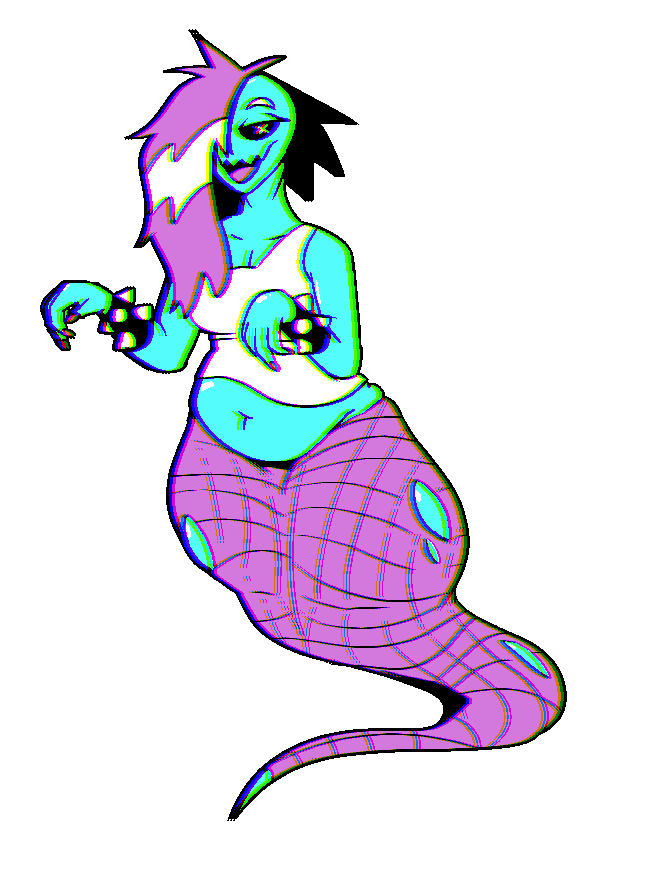

Candy
Candy | |
|---|---|
|  | |
| Full Name | Candace Caine |
| Pronouns | She/Her |
| Species | Ghost (Formerly Human) |
| Age | 24 at death, 3 years dead |
| Height | 205 cm / 6'9" (Head to tail) |
| Occupation | Nuisance |
| Relationships |
Root - "Friend" Pitch - "Friend" |
| Cause of Death | <???> |
| Spice Tolerance | Nonexistent |
Backstory
Candy lived a life she wasn't particularly proud of. A combination of an oppressive family and poor social skills lead to her living a repressed life where she constantly put on a mask, hiding her emotions and desires in favor of pleasing those around her and not making a fuss. This was also before she transitioned, and though she had some inklings of an idea that she wasn't a boy, she didn't dare think about them too hard.
It wasn't all bad - she had friends, hobbies, interests. But it felt hard to get all that enthusiastic about them when most enthusiasm she had got locked away.
One day, for reasons she struggles to recall, she died. Her soul, left restless from a life constrained, combined with a dash of good luck, returned in the form of a ghost. When she found her ghost form had naturally taken on a more feminie appearance, the weight of her life and all the things she never did slammed into her all at once. In that moment she realized her entire life had been a waste.
But now - now, she had a second chance. Her old life could burn to the ground, for all she cared. The shock of the moment gave her the kick she needed to throw it all out - it was time for a fresh start. She chose a new name for herself, and set out to live the most indulgent, freeing afterlife she could.
As far as she's concerned, her life is perfect, now. Whether or not that's true is another question entierly.
Character
Candy is hedonistic, lazy, and a bit of a dick sometimes. Her existence as a ghost lets her live nearly consequence-free, and she does. Food, socializing, sex, and other things she lacked in her living days she consumes in excess now. At her worst, she's abrasive and selfish, more concerned with satisfying her own desires than anything else. She has no intentions to be cruel, but her ignorance and lack of self awareness can get in the way, sometimes. Despite that, she has her moments of compassion and self reflection. Just, don't hold your breath.
She has a particular fondness for Root and Pitch. She hangs out at their apartment - usually uninvited - chatting with the two or stealing food from their fridge.
She often struggles with interests and relationships from when she was alive, trying to act like she no longer cares about them in an effort to distance herself from her time alive.
Powers
As a ghost, Candy has access to several unique abilities
- Phasing - Candy can pass through solid matter. Doing so takes active effort, though, and the denser the material or the more of her moving through it, the more resistance she encounters.
- Possession - Candy can possess other living beings, puppeteering their body as she sees fit.
- Ghost Hands - Candy can summon floating hands that resemble her own, letting them float around her and perform various tasks. More than a few, though, and she becomes quickly disoriented, losing track of them.
Trivia
- Candy's body feels a bit like putting your hand on the screen of a CRT television.
- She chose the name 'Candace Caine' mostly for the 'Candy Caine' pun.